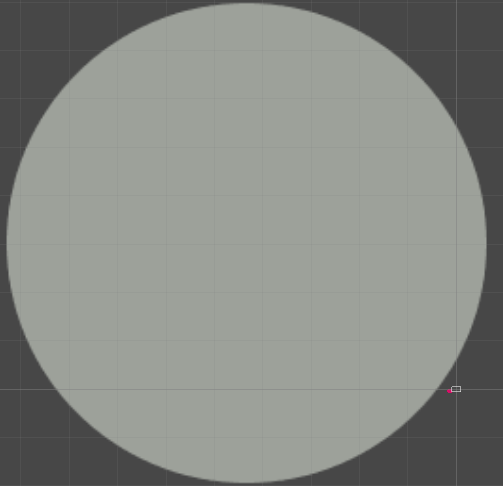

Welcome to the computer programming page! Here you can take a look at some of my coding projects. I have some experience with python code and a little bit of pygame too.
A few years ago I wanted to learn how to code, since I used to play a lot of video games and felt inspired to make my own. I never really ended up making any games (except for one which you'll see later) and mostly learned how to code through the makerspace class at my school and online courses offered by the Schulich Ignite program of the University of Calgary. I'm not exactly a super pro or anything, but I've worked on a few computer programming-related projects which I showcase here.
The first project I have to show here is one which I made with the Schulich Ignite program offered by University of Calgary. For those who don't know, every so often University of Calgary offers a free coding course for python. I enrolled in thede courses two times, and the second time I enrolled we learned about object oriented programming. By the end of the class we all had created games using pygame. The game I made is called "12 Thousand Pixels Up". In this game you must jump on floating platforms to reach the top while you avoid obstacles along the way and outrun the rising lava. If you would like to play the game you can download it through the GitHub linked below and then run the file called "12 Thousand Pixels Up.py" to play. If you don't want to download it that's fine; I also have a video which you can watch.
Creating this was not easy. I spent a lot of time trying to figure out how to get jumping to properly work, since I had to create my own physics rather than be able to rely on a game engine such as Unity or Unreal Engine to calculate the physics for me. This was also my first time creating a game using python, so a lot of the stuff I did to make this game was completely new to me. From creating this game I learned more about how code can be used to influence differnent elements and more about taking parts of different python files and putting them together.
Before, I really badly wanted to make games. Video games are important to me, as I've been playing them my whole life, although not as much as of late. Since I wanted to make my own game I began watching tutorials on how to use Unity to make games. Unity is a powerful game engine that makes game development much more optimized. It uses the C# programming language and gameobjects which are the building blocks that represent different elements of Unity games. I've never finished a game using Unity (for now), but below are some projects which I worked on.
This is a game project I worked on while in highschool. I wanted to learn a little bit about how I could use code to make a game of my own, so I sought out to create a basic 2D platformer like the original Super Mario. Below is a short video which shows some of the gameplay.
As you can see there are a few different aspects to the game. The red sections will reset the player cube back to the beginning. The realistic image of Peter Griffin is a powerup that grants the player a double jump ability. The black platforms are places where the player can stand and the grey platforms quickly fall after the player lands on them. You may have also noticed the different assets on the bottom part of the video. That is where all of the game's assets are stored, including code, sprites and audio. I will admit, I could have organized the assets better with specific folders for each kind of asset, but it's a very small project so it's no huge deal.
This game project is inspired by the video game "Spore" which was released in 2008 by Maxis. It's a wonderful game about evolving a species from a single cell to a spacefaring civilization. I mainly focused on the cell stage of Spore when I created my project, as the gameplay is quite simple. In my game which I titled "CONSUME", you play as a cube and must consume other smaller objects to grow in size. My idea was that the player would play as some creature the size of quarks and eventually grow so large that they consume reality, with many foes to face along the way. This is somewhat similar to the cell stage of Spore, as in Spore the player begins as a tiny cell and must find food to become larger and evolve to face the more powerful cells they encounter more advanced cells throughout the cell stage. Below is a sped up video that shows the progress I've made on the game.
You didn't see it in the video, but below is a screenshot showing more of the game world. The giant circle is meant to represent weak force and the tiny rectangle next to it is what the player can see at the beginning of the game before they begin consuming other objects.
Dank Deception is a game project I worked on which is inspired by the video game "Dark Deception" by Glowstick Entertainment. In Dark Deception, the player must avoid terrifying monsters while collecting shards, sort of like Pac-Man but the player is actually in the maze. Afterwards they released a demo for a game called "Super Dark Deception", which is the same game as the original except it's 2D. I thought it might be fun if I made my own version of Super Dark Deception which I called "Dank Deception" since I couldn't think of anything else. Below is a video demonstrating a bit of the game.
As you can see, the image of realistic Peter Griffin chases the player. This is because it is programmed to hunt the player's location via the fastest way possible. This allows me to create a basic chasing enemy for the maze which I never ended up finishing. Below is another video which shows the beginnings of a maze I began working on.
To make the level, I found some nice images of grass and wood and turned them into sprites. In case you didn't know, sprites are 2D graphics for games. Once I got the sprites I threw them into the game to create a basic environment. Each different environment I've created is stored in a scene which is essentually an independent section where I am able to work with specific elements, seperate from the entire rest of the game. Below is a screenshot of the entire grassy level area.
You may have also seen that the player has animations when they move. The animation sprites were created by the wonderful Tora I4-Icey. The actual process for making the animation work isn't too complex either. when the player moves the game cycles through the different frames of the animation to create a moving player.
The different projects you see on this page are just some of my computer programming-related projects. I still occasionally create programs in python and I have created many other simple python scripts which aren't on this page. Soon however, I'll be doing a lot more computer programming once I begin to study computer science at the University of Alberta.
NAVIGATION
Home 3D Stuff Animation Art Computer Programming Music Photography ProjectsSOCIALS
Youtube SoundCloud tumblr